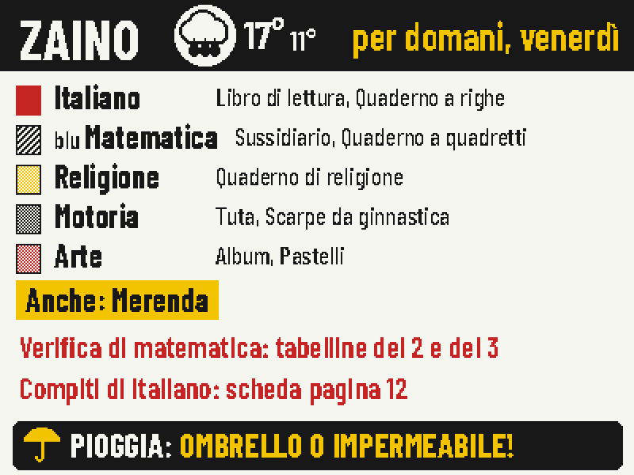
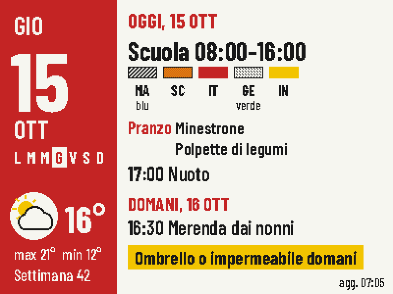
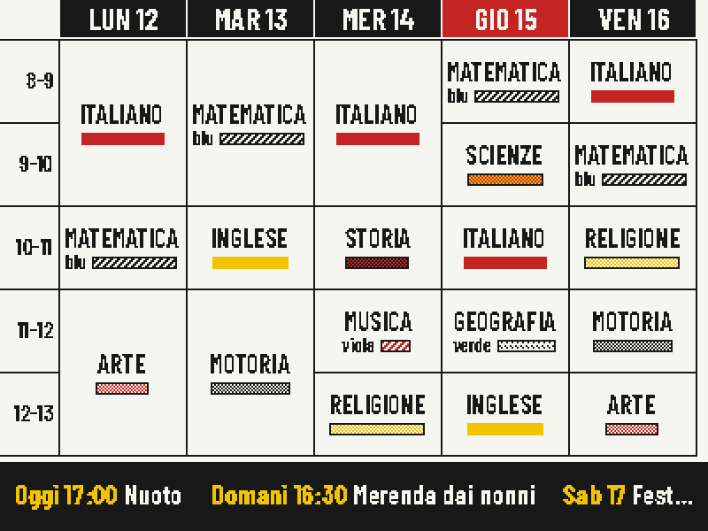
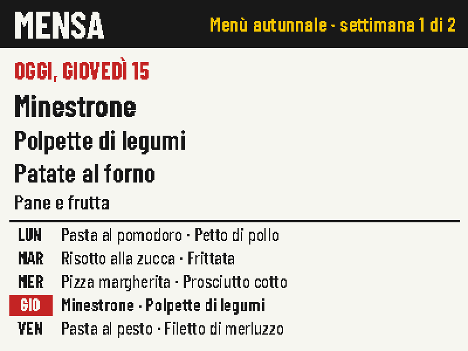
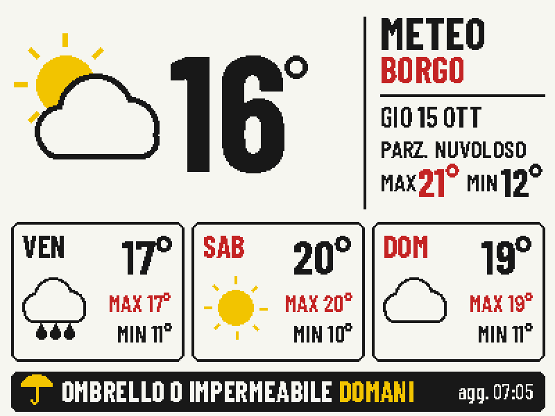
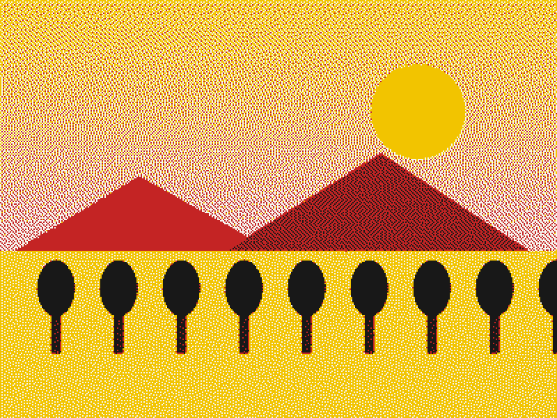
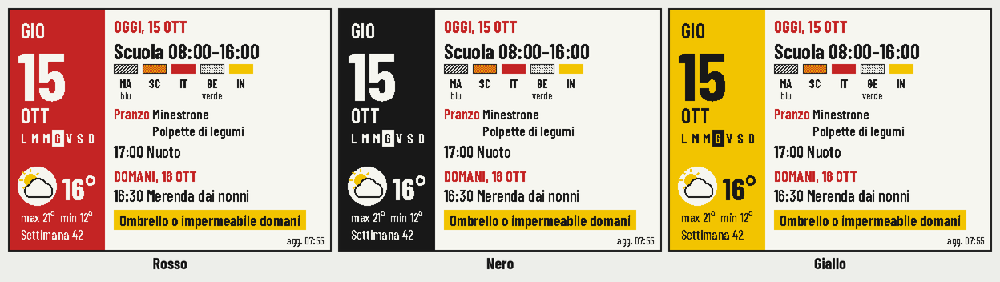
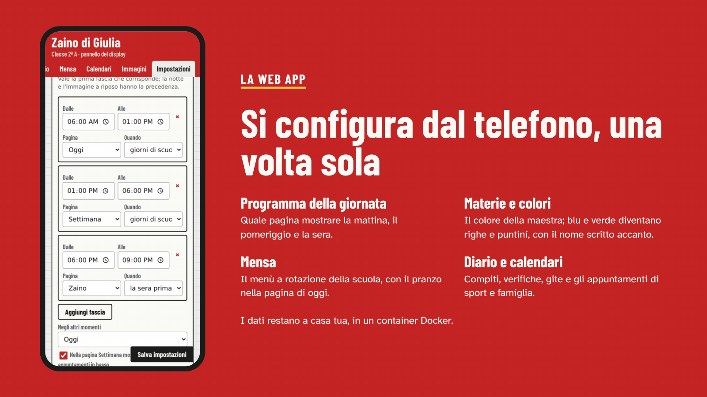

Versione 1.3, libera e open source, per lo ZECTRIX NOTE4C: un display e-paper da 4,2″ nero, bianco, rosso e giallo.
La giornata di scuola, appesa accanto alla porta.
La mattina mostra gli impegni, il meteo e cosa c'è in mensa. Il pomeriggio l'orario con i colori della maestra. La sera prima di scuola cosa mettere nello zaino, e l'avviso di prendere l'ombrello se pioverà.

Che cos'è
Zaino è un software libero che trasforma un piccolo display e-paper in una dashboard scolastica per tuo figlio. La carta elettronica tiene l'immagine anche senza corrente, quindi lo schermo è sempre lì, come un orologio, e la batteria dura.
Un piccolo server in casa disegna le pagine. Il display si sveglia, scarica la pagina che serve e torna a dormire. Si configura tutto una volta sola, dal telefono.
- MattinaOggi: impegni, meteo e mensa.
- PomeriggioSettimana: l'orario, con i prossimi appuntamenti.
- Sera prima di scuolaZaino: libri, compiti, verifiche, avviso pioggia.
- Quando vuoiIl tasto frontale scorre le altre pagine.
Sei pagine, quella giusta al momento giusto
Scegli tu quale pagina mostrare in ogni momento della giornata e in quali giorni. Il tasto frontale scorre le altre.

OggiImpegni, meteo, mensa e un consiglio per domani.
SettimanaL'orario come quello in classe.
MensaIl menù a rotazione della scuola.
MeteoOggi e i tre giorni successivi.
RiposoUna tua immagine, di notte.Tutte le schermate sono di 400 × 300 pixel, mostrate al doppio, con dati di esempio.
I colori che il pannello non ha
I bambini riconoscono le materie dal colore: matematica è blu, arte è rosa. Il pannello ha solo quattro pigmenti, e Zaino si arrangia. Rosso, giallo e nero sono esatti. Arancione, rosa e grigio si ottengono mescolando puntini. Blu, verde e viola diventano righe e puntini, con il nome del colore scritto accanto.

Si configura dal telefono, una volta sola
Una web app sulla rete di casa contiene tutto: le materie e i loro colori, l'orario, cosa portare ogni giorno, il diario con compiti e verifiche, la mensa, i calendari di sport e famiglia, e quale pagina mostrare quando. Aggiungila alla schermata Home e si comporta come un'app.

Come funziona
Il display si sveglia agli orari che scegli, oppure quando premi un tasto. Chiede al server la pagina del momento e la ridisegna solo se è cambiato qualcosa. Poi torna a dormire fino al risveglio successivo, che il server calcola per lui.
Il display
Zaino funziona sullo ZECTRIX NOTE4C Devkit: un pannello e-paper da 4,2″ a quattro colori con ESP32-S3 e batteria da 2000 mAh. Il NOTE4 in bianco e nero non è compatibile.
Installazione
Servono uno ZECTRIX NOTE4C Devkit, un computer di casa sempre acceso con Docker (un NAS, un mini PC, un Raspberry Pi) e una rete Wi-Fi a 2,4 GHz.
- Avvia il server
Poi aprigit clone https://github.com/filippocobelli/zaino.git cd zaino/server docker compose up -d --buildhttp://IP-DEL-SERVER:3021/admin. - ConfiguraDalla web app: località del meteo, materie, orario, mensa, calendari e programma della giornata.
- Fai il backup del displayPrima copia la memoria del NOTE4C. È l'unico modo per tornare al software di fabbrica.
- Installa il firmwareCollega il display al Wi-Fi con il firmware di riferimento ZECTRIX, compila Zaino con l'indirizzo del tuo server (
./build.sh http://192.168.1.50:3021, serve solo Docker) e installalo con il firmware updater ZECTRIX, mantenendo le impostazioni.
La guida completa è in docs/installazione.md. Non hai ancora un NOTE4C? Ecco dove trovarlo.
Cosa è stato provato, e cosa no
- Display
- Solo il NOTE4C Devkit con il pannello a quattro colori. Il NOTE4 in bianco e nero non è compatibile.
- Provato
- Su un NOTE4C di casa, con il server in Docker su un mini PC Proxmox.
- Batteria
- Non ancora misurata. Il display dorme tra un aggiornamento e l'altro e ridisegna solo quando cambia qualcosa.
- Wi-Fi
- Il firmware usa la rete salvata dal firmware di riferimento ZECTRIX. Non sa ancora configurare il Wi-Fi da solo.
I tuoi dati
Orario, nomi, diario e menù restano sul tuo server, in un solo file.
- Open-Meteo
- La località salvata, per il meteo.
- I tuoi calendari
- Solo i link iCal che aggiungi tu.
- La web app
- Non ha login: tienila sulla rete di casa o dietro una VPN, mai aperta su internet.
Come è nato
In tutta onestà: non sono un programmatore. Ho tante idee e poche competenze di programmazione, quindi Zaino l'ho realizzato con Claude, l'intelligenza artificiale di Anthropic. Io ho deciso cosa doveva fare e come doveva essere, e l'ho provato sul display vero e con mio figlio. Ci sono voluti parecchi tentativi ed errori prima che tutto funzionasse.
Se conosci ESP-IDF, FastAPI o l'e-paper meglio di me, segnalazioni e pull request sono benvenute.
Prossimo passo: una versione stand-alone che gira tutta nel display, senza server e senza Docker, configurata dal telefono tramite il Wi-Fi del display stesso.